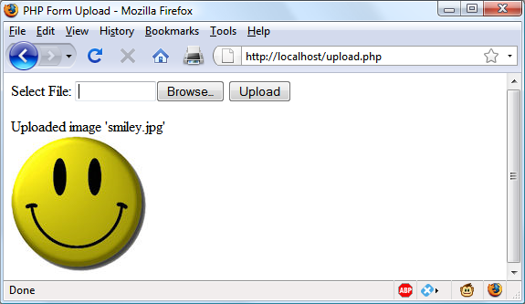

Practical PHP
Previous chapters went over the elements of the PHP language. This chapter builds
on your new programming skills to teach you some common but important practical
tasks. You will learn the best ways to manage string handling to achieve clear and
concise code that displays in web browsers exactly how you want it to, including
advanced date and time management. You’ll also find out how to create and other‐
wise modify files, including those uploaded by users.
Using printf
You’ve already seen the
print
and
echo
functions, which simply output text to the
browser. But a much more powerful function,
printf
, controls the format of the out‐
put by letting you put special formatting characters in a string. For each formatting
character,
printf
expects you to pass an argument that it will display using that for‐
mat. For instance, the following example uses the
%d
conversion specifier to display
the value
3
in decimal:
printf("There are %d items in your basket", 3);
If you replace the
%d
with
%b
, the value
3
would be displayed in binary (
11
).
Table 7-1
shows the conversion specifiers supported.
Table 7-1. The printf conversion specifiers
| Specifier |
Conversion action on argument arg |
Example (for an arg of 123) |
| % |
Display a % character (no arg required) |
% |
| b |
Display arg as a binary integer |
1111011 |
| c |
Display ASCII character for the arg |
{ |
| d |
Display arg as a signed decimal integer |
123 |
| e |
Display arg using scientific notation |
1.23000e+2 |
| f |
Display arg as floating point |
123.000000 |
| o |
Display arg as an octal integer |
173 |
| s |
Display arg as a string |
123 |
| u |
Display arg as an unsigned decimal |
123 |
| x |
Display arg in lowercase hexadecimal |
7b |
| X |
Display arg in uppercase hexadecimal |
7B |
You can have as many specifiers as you like in a
printf
function, as long as you pass a
matching number of arguments, and as long as each specifier is prefaced by a
%
sym‐
bol. Therefore, the following code is valid, and will output
"My name is Simon. I'm
33 years old, which is 21 in hexadecimal"
:
printf("My name is %s. I'm %d years old, which is %X in hexadecimal",
'Simon', 33, 33);
If you leave out any arguments, you will receive a parse error informing you that a
right bracket,
)
, was unexpectedly encountered.
A more practical example of
printf
sets colors in HTML using decimal. For example,
suppose you know you want a color that has a triplet value of 65 red, 127 green, and
245 blue, but don’t want to convert this to hexadecimal yourself. Here’s an easy solu‐
tion is:
printf("<span style='color:#%X%X%X'>Hello</span>", 65, 127, 245);
Check the format of the color specification between the apostrophes (
''
) carefully.
First comes the pound, or hash, sign (
#
) expected by the color specification. Then
come three
%X
format specifiers, one for each of your numbers. The resulting output
from this command is as follows:
<span style='color:#417FF5'>Hello</span>
Usually, you’ll find it convenient to use variables or expressions as arguments to
printf
. For instance, if you stored values for your colors in the three variables
$r
,
$g
,
and
$b
, you could create a darker color with this:
printf("<span style='color:#%X%X%X'>Hello</span>", $r-20, $g-20, $b-20);
Precision Setting
Not only can you specify a conversion type, but you can also set the precision of the
displayed result. For example, amounts of currency are usually displayed with only
two digits of precision. However, after a calculation, a value may have a greater preci‐
sion than this, such as 123.42 / 12, which results in 10.285. To ensure that such values
are correctly stored internally, but displayed with only two digits of precision, you can
insert the string
".2"
between the
%
symbol and the conversion specifier:
printf("The result is: $%.2f", 123.42 / 12);
The output from this command is as follows:
The result is $10.29
But you actually have even more control than that, because you can also specify
whether to pad output with either zeros or spaces by prefacing the specifier with cer‐
tain values.
Example 7-1
shows four possible combinations.
Example 7-1. Precision setting
<?php
echo "<pre>"; // Enables viewing of the spaces
// Pad to 15 spaces
printf("The result is $%15f\n", 123.42 / 12);
// Pad to 15 spaces, fill with zeros
printf("The result is $%015f\n", 123.42 / 12);
// Pad to 15 spaces, 2 decimal places precision
printf("The result is $%15.2f\n", 123.42 / 12);
// Pad to 15 spaces, 2 decimal places precision, fill with zeros
printf("The result is $%015.2f\n", 123.42 / 12);
// Pad to 15 spaces, 2 decimal places precision, fill with # symbol
printf("The result is $%'#15.2f\n", 123.42 / 12);
?>
The output from this example looks like this:
The result is $ 10.285000
The result is $00000010.285000
The result is $ 10.29
The result is $000000000010.29
The result is $##########10.29
The way it works is simple if you go from right to left (see
Table 7-2
). Notice that:
•
The rightmost character is the conversion specifier: in this case,
f
for floating
point.
•
Just before the conversion specifier, if there is a period and a number together,
then the precision of the output is specified as the value of the number.
•
Regardless of whether there’s a precision specifier, if there is a number, then that
represents the number of characters to which the output should be padded. In
the previous example, this is 15 characters. If the output is already equal to or
greater than the padding length, then this argument is ignored.
•
The leftmost parameter allowed after the
%
symbol is a
0
, which is ignored unless
a padding value has been set, in which case the output is padded with zeros
instead of spaces. If a pad character other than zero or a space is required, you
can use any one of your choices as long as you preface it with a single quotation
mark, like this:
'#
.
•
On the left is the
%
symbol, which starts the conversion.
Table 7-2. Conversion specifier components
| Start conversion |
Pad character |
Number of pad characters |
Display precision |
Conversion specifier |
Examples |
| % |
|
15 |
|
f |
10.285000 |
| % |
0 |
15 |
.2 |
f |
000000000010.29 |
| % |
'# |
15 |
.4 |
f |
########10.2850 |
String Padding
You can also pad strings to required lengths (as you can with numbers), select differ‐
ent
padding
characters,
and
even
choose
between
left
and
right
justification.
Example 7-2
shows various examples.
Example 7-2. String padding
<?php
echo "<pre>"; // Enables viewing of the spaces
$h = 'Rasmus';
printf("[%s]\n", $h); // Standard string output
printf("[%12s]\n", $h); // Right justify with spaces to width 12
printf("[%-12s]\n", $h); // Left justify with spaces
printf("[%012s]\n", $h); // Zero padding
printf("[%'#12s]\n\n", $h); // Use the custom padding character '#'
$d = 'Rasmus Lerdorf'; // The original creator of PHP
printf("[%12.8s]\n", $d); // Right justify, cutoff of 8 characters
printf("[%-12.12s]\n", $d); // Left justify, cutoff of 12 characters
printf("[%-'@12.10s]\n", $d); // Left justify, pad '@', cutoff 10 chars
?>
Note how for purposes of layout in a web page, I’ve used the
<pre>
HTML tag to pre‐
serve all the spaces and the
\n
newline character after each of the lines to be dis‐
played. The output from this example is as follows:
[Rasmus]
[ Rasmus]
[Rasmus ]
[000000Rasmus]
[######Rasmus]
[ Rasmus L]
[Rasmus Lerdo]
[Rasmus Ler@@]
When you are specifying a padding value, if a string is already of equal or greater
length than that value, it will be ignored,
unless
a cutoff value is given that shortens
the string back to less than the padding value.
Table 7-3
shows the components available to string conversion specifiers.
Table 7-3. String conversion specifier components
| Start conversion |
Left/right justify |
Padding character |
Number of pad characters |
Cutoff |
Conversion specifier |
Examples (using “Rasmus”) |
| % |
|
|
|
s |
[Rasmus] |
| % |
- |
|
10 |
|
s |
[Rasmus ] |
| % |
|
'# |
8 |
.4 |
s |
[####Rasm] |
Using sprintf
Often, you don’t want to output the result of a conversion but need it to use elsewhere
in your code. This is where the
sprintf
function comes in. With it, you can send the
output to another variable rather than to the browser.
You might use it to make a conversion, as in the following example, which returns the
hexadecimal string value for the RGB color group 65, 127, 245 in
$hexstring
:
$hexstring = sprintf("%X%X%X", 65, 127, 245);
Or you may wish to store output ready to display later on:
$out = sprintf("The result is: $%.2f", 123.42 / 12);
echo $out;
Date and Time Functions
To keep track of the date and time, PHP uses standard Unix timestamps, which are
simply the number of seconds since the start of January 1, 1970. To determine the
current timestamp, you can use the
time
function:
echo time();
Because the value is stored as seconds, to obtain the timestamp for this time next
week, you would use the following, which adds 7 days times 24 hours times 60
minutes times 60 seconds to the returned value:
echo time() + 7 * 24 * 60 * 60;
If you wish to create a timestamp for a given date, you can use the
mktime
function.
Its output is the timestamp
946684800
for the first second of the first minute of the
first hour of the first day of the year 2000:
echo mktime(0, 0, 0, 1, 1, 2000);
The parameters to pass are, in order from left to right:
•
The number of the hour (0–23)
•
The number of the minute (0–59)
•
The number of seconds (0–59)
•
The number of the month (1–12)
•
The number of the day (1–31)
•
The year (1970–2038, or 1901–2038 with PHP 5.1.0+ on 32-bit signed systems)
You may ask why you are limited to the years 1970 through 2038.
Well, it’s because the original developers of Unix chose the start of
the year 1970 as the base date that no programmer should need to
go before!
Luckily, because (as of version 5.1.0) PHP supports systems using a
signed 32-bit integer for the timestamp, dates from 1901 to 2038
are allowed on them. However, that introduces a problem even
worse than the original because the Unix designers also decided
that nobody would be using Unix after about 70 years or so, and
therefore believed they could get away with storing the timestamp
as a 32-bit value—which will run out on January 19, 2038!
This will create what has come to be known as the Y2K38 bug
(much like the millennium bug, which was caused by storing years
as two-digit values, and which also had to be fixed). PHP intro‐
duced the
DateTime
class in version 5.2 to overcome this issue, but
it will work only on 64-bit architecture.
To display the date, use the
date
function, which supports a plethora of formatting
options, enabling you to display the date any way you wish. The format is as follows:
date($format, $timestamp);
The parameter
$format
should be a string containing formatting specifiers as detailed
in
Table 7-4
, and
$timestamp
should be a Unix timestamp. For the complete list of
specifiers, please see
http://php.net/manual/en/function.date.php
. The following com‐
mand will output the current date and time in the format
"Thursday July 6th,
2017 - 1:38pm"
:
echo date("l F jS, Y - g:ia", time());
Table 7-4. The major date function format specifiers
| Format |
Description |
Returned value |
| Day specifiers |
|
|
| d |
Day of month, two digits, with leading zeros |
01 to 31 |
| D |
Day of the week, three letters |
Mon to Sun |
| j |
Day of the month, no leading zeros |
1 to 31 |
| l |
Day of week, full names |
Sunday to Saturday |
| N |
Day of week, numeric, Monday to Sunday |
1 to 7 |
| S |
Suffix for day of month (useful with specifier j) |
st,nd,rd, or th |
| w |
Day of week, numeric, Sunday to Saturday |
0 to 6 |
| z |
Day of year |
0 to 365 |
| Week specifier |
|
|
| W |
Week number of year |
01 to 52 |
| Month specifiers |
|
|
| F |
Month name |
January to December |
| m |
Month number with leading zeros |
01 to 12 |
| M |
Month name, three letters |
Jan to Dec |
| n |
Month number, no leading zeros |
1 to 12 |
| t |
Number of days in given month |
28 to 31 |
| Year specifiers |
|
|
| L |
Leap year |
1 = Yes, 0 = No |
| y |
Year, 2 digits |
00 to 99 |
| Y |
Year, 4 digits |
0000 to 9999 |
| Time specifiers |
|
|
| a |
Before or after midday, lowercase |
am or pm |
| A |
Before or after midday, uppercase |
AM or PM |
| g |
Hour of day, 12-hour format, no leading zeros |
1 to 12 |
| G |
Hour of day, 24-hour format, no leading zeros |
00 to 23 |
| h |
Hour of day, 12-hour format, with leading zeros |
01 to 12 |
| H |
Hour of day, 24-hour format, with leading zeros |
00 to 23 |
| i |
Minutes, with leading zeros |
00 to 59 |
| s |
Seconds, with leading zeros |
00 to 59 |
Date Constants
There are a number of useful constants that you can use with the
date
command to
return the date in specific formats. For example,
date(DATE_RSS)
returns the current
date and time in the valid format for an RSS feed. Some of the more commonly used
constants are as follows:
DATE_ATOM
This is the format for Atom feeds. The PHP format is
"Y-m-d\TH:i:sP"
and example
output is
"2018-08-16T12:00:00+00:00".
DATE_COOKIE
This is the format for cookies set from a web server or JavaScript. The PHP format is
"l, d-M-y H:i:s T"
and example output is
"Thursday, 16-Aug-18 12:00:00
UTC".
DATE_RSS
This is the format for RSS feeds. The PHP format is
"D, d M Y H:i:s O"
and exam‐
ple output is
"Thu, 16 Aug 2018 12:00:00 UTC".
DATE_W3C
This is the format for the World Wide Web Consortium. The PHP format is
"Y-m-d
\TH:i:sP"
and example output is
"2018-08-16T12:00:00+00:00"
.
The complete list can be found at
http://php.net/manual/en/class.datetime.php.
Using checkdate
You’ve seen how to display a valid date in a variety of formats. But how can you check
whether a user has submitted a valid date to your program? The answer is to pass the
month, day, and year to the
checkdate
function, which returns a value of
TRUE
if the
date is valid, or
FALSE
if it is not.
For example, if February 30 of any year is input, it will always be an invalid date.
Example 7-3
shows code that you could use for this. As it stands, it will find the given
date invalid.
Example 7-3. Checking for the validity of a date
<?php
$month = 9; // September (only has 30 days)
$day = 31; // 31st
$year = 2018; // 2018
if (checkdate($month, $day, $year)) echo "Date is valid";
else echo "Date is invalid";
?>
File Handling
Powerful as it is, MySQL is not the only (or necessarily the best) way to store all data
on a web server. Sometimes it can be quicker and more convenient to directly access
files on the hard disk. Cases in which you might need to do this are modifying images
such as uploaded user avatars, or log files that you wish to process.
First, though, a note about file naming: if you are writing code that may be used on
various PHP installations, there is no way of knowing whether these systems are case-
sensitive. For example, Windows and Mac OS X filenames are not case-sensitive, but
Linux and Unix ones are. Therefore, you should always assume that the system is
case-sensitive and stick to a convention such as all lowercase filenames.
Checking Whether a File Exists
To determine whether a file already exists, you can use the
file_exists
function,
which returns either
TRUE
or
FALSE
, and is used like this:
if (file_exists("testfile.txt")) echo "File exists";
Creating a File
At this point,
testfile.txt
doesn’t exist, so let’s create it and write a few lines to it. Type
Example 7-4
and save it as
testfile.php
.
Example 7-4. Creating a simple text
file
<?php // testfile.php
$fh = fopen("testfile.txt", 'w') or die("Failed to create file");
$text = <<<_END
Line 1
Line 2
Line 3
_END;
fwrite($fh, $text) or die("Could not write to file");
fclose($fh);
echo "File 'testfile.txt' written successfully";
?>
When you run this in a browser, all being well, you will receive the message
File
'testfile.txt' written successfully
. If you receive an error message, your hard
disk may be full or, more likely, you may not have permission to create or write to the
file, in which case you should modify the attributes of the destination folder accord‐
ing to your operating system. Otherwise, the file
testfile.txt
should now be residing in
the same folder in which you saved the
testfile.php
program. Try opening the file in a
text or program editor—the contents will look like this:
Line 1
Line 2
Line 3
This simple example shows the sequence that all file handling takes:
1.
Always start by opening the file. You do this through a call to
fopen
.
2.
Then you can call other functions; here we write to the file (
fwrite
), but you can
also read from an existing file (
fread
or
fgets
) and do other things.
3.
Finish by closing the file (
fclose
). Although the program does this for you when
it ends, you should clean up by closing the file when you’re finished.
Every open file requires a file resource so that PHP can access and manage it. The
preceding example sets the variable
$fh
(which I chose to stand for
file handle
) to the
value returned by the
fopen
function. Thereafter, each file-handling function that
accesses the opened file, such as
fwrite
or
fclose
, must be passed
$fh
as a parameter
to identify the file being accessed. Don’t worry about the content of the
$fh
variable;
it’s a number PHP uses to refer to internal information about the file—you just pass
the variable to other functions.
Upon failure,
FALSE
will be returned by
fopen
. The previous example shows a simple
way to capture and respond to the failure: it calls the
die
function to end the program
and give the user an error message. A web application would never abort in this crude
way (you would create a web page with an error message instead), but this is fine for
our testing purposes.
Notice the second parameter to the
fopen
call. It is simply the character
w
, which tells
the function to open the file for writing. The function creates the file if it doesn’t
already exist. Be careful when playing around with these functions: if the file already
exists, the
w
mode parameter causes the
fopen
call to delete the old contents (even if
you don’t write anything new!).
There are several different mode parameters that can be used here, as detailed in
Table 7-5
.
Table 7-5. The supported fopen modes
| Mode |
Action |
Description |
| 'r' |
Read from file start |
Open for reading only; place the file pointer at the beginning of the file. Return
FALSE
if the
file doesn’t already exist. |
| 'r+' |
Read from file start and allow writing |
Open for reading and writing; place the file pointer at the beginning of the file. Return
FALSE
if the file doesn’t already exist. |
| 'w' |
Write from file start and truncate file |
Open for writing only; place the file pointer at the beginning of the file and truncate the file to zero length. If the file doesn’t exist, attempt to create it. |
| 'w+' |
Write from file start, truncate file, and allow reading |
Open for reading and writing; place the file pointer at the beginning of the file and truncate the file to zero length. If the file doesn’t exist, attempt to create it. |
| 'a' |
Append to file end |
Open for writing only; place the file pointer at the end of the file. If the file doesn’t exist, attempt to create it. |
| 'a+' |
Append to file end and allow reading |
Open for reading and writing; place the file pointer at the end of the file. If the file doesn’t exist, attempt to create it. |
Reading from Files
The easiest way to read from a text file is to grab a whole line through
fgets
(think of
the final
s
as standing for
string
), as in
Example 7-5
.
Example 7-5. Reading a file with fgets
<?php
$fh = fopen("testfile.txt", 'r') or
die("File does not exist or you lack permission to open it");
$line = fgets($fh);
fclose($fh);
echo $line;
?>
If you created the file as shown in
Example 7-4
, you’ll get the first line:
Line 1
Or you can retrieve multiple lines or portions of lines through the
fread
function, as
in
Example 7-6
.
Example 7-6. Reading a
file with fread
<?php
$fh = fopen("testfile.txt", 'r') or
die("File does not exist or you lack permission to open it");
$text = fread($fh, 3);
fclose($fh);
echo $text;
?>
I’ve requested three characters in the
fread
call, so the program displays this:
Lin
The
fread
function is commonly used with binary data. But if you use it on text data
that spans more than one line, remember to count newline characters.
Copying Files
Let’s try out the PHP
copy
function to create a clone of
testfile.txt
. Type
Example 7-7
and save it as
copyfile.php
, and then call up the program in your browser.
Example 7-7. Copying a
file
<?php // copyfile.php
copy('testfile.txt', 'testfile2.txt') or die("Could not copy file");
echo "File successfully copied to 'testfile2.txt'";
?>
If you check your folder again, you’ll see that you now have the new file
testfile2.txt
in
it. By the way, if you don’t want your programs to exit on a failed copy attempt, you
could try the alternate syntax in
Example 7-8
.
Example 7-8. Alternate syntax for copying a
file
<?php // copyfile2.php
if (!copy('testfile.txt', 'testfile2.txt')) echo "Could not copy file";
else echo "File successfully copied to 'testfile2.txt'";
?>
Moving a File
To move a file, rename it with the
rename
function, as in
Example 7-9
.
Example 7-9. Moving a
file
<?php // movefile.php
if (!rename('testfile2.txt', 'testfile2.new'))
echo "Could not rename file";
else echo "File successfully renamed to 'testfile2.new'";
?>
You can use the
rename
function on directories, too. To avoid any warning messages,
if the original file doesn’t exist, you can call the
file_exists
function first to check.
Deleting a File
Deleting a file is just a matter of using the
unlink
function to remove it from the file
system, as in
Example 7-10.
Example 7-10. Deleting a
file
<?php // deletefile.php
if (!unlink('testfile2.new')) echo "Could not delete file";
else echo "File 'testfile2.new' successfully deleted";
?>
Whenever you access files on your hard disk directly, you must also
always ensure that it is impossible for your file system to be com‐
promised. For example, if you are deleting a file based on user
input, you must make absolutely certain it is a file that can be safely
deleted and that the user is allowed to delete it.
As with moving a file, a warning message will be displayed if the file doesn’t exist,
which you can avoid by using
file_exists
to first check for its existence before call‐
ing
unlink
.
Updating Files
Often, you will want to add more data to a saved file, which you can do in many ways.
You can use one of the append write modes (see
Table 7-5
), or you can simply open a
file for reading and writing with one of the other modes that supports writing, and
move the file pointer to the correct place within the file that you wish to write to or
read from.
The
file pointer
is the position within a file at which the next file access will take place,
whether it’s a read or a write. It is not the same as the
file handle
(as stored in the
variable
$fh
in
Example 7-4
), which contains details about the file being accessed.
You can see this in action by typing
Example 7-11
and saving it as
update.php
. Then
call it up in your browser.
Example 7-11. Updating a
file
<?php // update.php
$fh = fopen("testfile.txt", 'r+') or die("Failed to open file");
$text = fgets($fh);
fseek($fh, 0, SEEK_END);
fwrite($fh, "$text") or die("Could not write to file");
fclose($fh);
echo "File 'testfile.txt' successfully updated";
?>
This program opens
testfile.txt
for both reading and writing by setting the mode with
'r+'
, which puts the file pointer right at the start. It then uses the
fgets
function to
read in a single line from the file (up to the first line feed). After that, the
fseek
func‐
tion is called to move the file pointer right to the file end, at which point the line of
text that was extracted from the start of the file (stored in
$text
) is then appended to
file’s end and the file is closed. The resulting file now looks like this:
Line 1
Line 2
Line 3
Line 1
The first line has successfully been copied and then appended to the file’s end.
As used here, in addition to the
$fh
file handle, the
fseek
function was passed two
other parameters,
0
and
SEEK_END
.
SEEK_END
tells the function to move the file
pointer to the end of the file, and
0
tells it how many positions it should then be
moved backward from that point. In the case of
Example 7-11
, a value of
0
is used,
because the pointer is required to remain at the file’s end.
There are two other seek options available to the
fseek
function:
SEEK_SET
and
SEEK_CUR
. The
SEEK_SET
option tells the function to set the file pointer to the exact
position given by the preceding parameter. Thus, the following example moves the
file pointer to position 18:
fseek($fh, 18, SEEK_SET);
SEEK_CUR
sets the file pointer to the current position
plus
the value of the given offset.
Therefore, if the file pointer is currently at position 18, the following call will move it
to position 23:
fseek($fh, 5, SEEK_CUR);
Although this is not recommended unless you have very specific reasons for it, it is
even possible to use text files such as this (but with fixed line lengths) as simple flat
file databases. Your program can then use
fseek
to move back and forth within such
a file to retrieve, update, and add new records. You can also delete records by over‐
writing them with zero characters, and so on.
Locking Files for Multiple Accesses
Web programs are often called by many users at the same time. If more than one per‐
son tries to write to a file simultaneously, it can become corrupted. And if one person
writes to it while another is reading from it, the file is all right, but the person reading
it can get odd results. To handle simultaneous users, you must use the file-locking
flock
function. This function queues up all other requests to access a file until your
program releases the lock. So, whenever your programs use write access on files that
may be accessed concurrently by multiple users, you should also add file locking to
them, as in
Example 7-12
, which is an updated version of
Example 7-11
.
Example 7-12. Updating a
file with file locking
<?php
$fh = fopen("testfile.txt", 'r+') or die("Failed to open file");
$text = fgets($fh);
if (flock($fh, LOCK_EX))
{
fseek($fh, 0, SEEK_END);
fwrite($fh, "$text") or die("Could not write to file");
flock($fh, LOCK_UN);
}
fclose($fh);
echo "File 'testfile.txt' successfully updated";
?>
There is a trick to file locking to preserve the best possible response time for your
website visitors: perform it directly before a change you make to a file, and then
unlock it immediately afterward. Having a file locked for any longer than this will
slow
down
your
application
unnecessarily.
This
is
why
the
calls
to
flock
in
Example 7-12
are directly before and after the
fwrite
call.
The first call to
flock
sets an exclusive file lock on the file referred to by
$fh
using the
LOCK_EX
parameter:
flock($fh, LOCK_EX);
From this point onward, no other processes can write to (or even read from) the file
until you release the lock by using the
LOCK_UN
parameter, like this:
flock($fh, LOCK_UN);
As soon as the lock is released, other processes are again allowed access to the file.
This is one reason why you should re-seek to the point you wish to access in a file
each time you need to read or write data, because another process could have
changed the file since the last access.
However, did you notice that the call to request an exclusive lock is nested as part of
an
if
statement? This is because
flock
is not supported on all systems; thus, it is wise
to check whether you successfully secured a lock, just in case one could not be
obtained.
Something else you must consider is that
flock
is what is known as an
advisory
lock.
This means that it locks out only other processes that call the function. If you have
any code that goes right in and modifies files without implementing
flock
file lock‐
ing, it will always override the locking and could wreak havoc on your files.
By the way, implementing file locking and then accidentally leaving it out in one sec‐
tion of code can lead to an extremely hard-to-locate bug.
flock
will not work on NFS and many other networked file sys‐
tems. Also, when using a multithreaded server like ISAPI, you may
not be able to rely on
flock
to protect files against other PHP
scripts running in parallel threads of the same server instance.
Additionally,
flock
is not supported on any system using the old
FAT file system, such as older versions of Windows.
Reading an Entire File
A handy function for reading in an entire file without having to use file handles is
file_get_contents
. It’s very easy to use, as you can see in
Example 7-13
.
Example 7-13. Using
file_get_contents
<?php
echo "<pre>"; // Enables display of line feeds
echo file_get_contents("testfile.txt");
echo "</pre>"; // Terminates pre tag
?>
But the function is actually a lot more useful than that, because you can also use it to
fetch a file from a server across the Internet, as in
Example 7-14
, which requests the
HTML from the O’Reilly home page, and then displays it as if the user had surfed to
the page itself. The result will be similar to
Figure 7-1
.
Example 7-14. Grabbing the O’Reilly home page
<?php
echo file_get_contents("http://oreilly.com");
?>
Figure 7-1. The O’Reilly home page grabbed with file_get_contents
Uploading Files
Uploading files to a web server is a subject that seems daunting to many people, but it
actually couldn’t be much easier. All you need to do to upload a file from a form is
choose a special type of encoding called
multipart/form-data
, and your browser will
handle the rest. To see how this works, type the program in
Example 7-15
and save it
as
upload.php
. When you run it, you’ll see a form in your browser that lets you upload
a file of your choice.
Example 7-15. Image uploader upload.php
<?php // upload.php
echo <<<_END
<html><head><title>PHP Form Upload</title></head><body>
<form method='post' action='upload.php' enctype='multipart/form-data'>
Select File: <input type='file' name='filename' size='10'>
<input type='submit' value='Upload'>
</form>
_END;
if ($_FILES)
{
$name = $_FILES['filename']['name'];
move_uploaded_file($_FILES['filename']['tmp_name'], $name);
echo "Uploaded image '$name'<br><img src='$name'>";
}
echo "</body></html>";
?>
Let’s examine this program a section at a time. The first line of the multiline
echo
statement starts an HTML document, displays the title, and then starts the docu‐
ment’s body.
Next we come to the form that selects the Post method of form submission, sets the
target for posted data to the program
upload.php
(the program itself), and tells the
web browser that the data posted should be encoded via the content MIME type of
multipart/form-data
.
With the form set up, the next lines display the prompt Select File: and then request
two inputs. The first request is for a file; it uses an input type of
file
, a name of
filename
, and an input field with a width of 10 characters. The second requested
input is just a Submit button that is given the label Upload (which replaces the default
button text of Submit Query). And then the form is closed.
This short program shows a common technique in web programming in which a sin‐
gle program is called twice: once when the user first visits a page, and again when the
user presses the Submit button.
The PHP code to receive the uploaded data is fairly simple, because all uploaded files
are placed into the associative system array
$_FILES
. Therefore, a quick check to see
whether
$_FILES
contains anything is sufficient to determine whether the user has
uploaded a file. This is done with the statement
if ($_FILES)
.
The first time the user visits the page, before uploading a file,
$_FILES
is empty, so the
program skips this block of code. When the user uploads a file, the program runs
again and discovers an element in the
$_FILES
array.
Once the program realizes that a file was uploaded, the actual name, as read from the
uploading computer, is retrieved and placed into the variable
$name
. Now all that’s
necessary is to move the file from the temporary location in which PHP stored the
uploaded file to a more permanent one. We do this using the
move_uploaded_file
function, passing it the original name of the file, with which it is saved to the current
directory.
Finally, the uploaded image is displayed within an
IMG
tag, and the result should look
like
Figure 7-2
.
If you run this program and receive warning messages such as
Per
mission denied
for the
move_uploaded_file
function call, then
you may not have the correct permissions set for the folder in
which the program is running.

Figure 7-2. Uploading an image as form data
Using $_FILES
Five things are stored in the
$_FILES
array when a file is uploaded, as shown in
Table 7-6
(where
file
is the file upload field name supplied by the submitting form).
Table 7-6. The contents of the $_FILES array
Array element
Contents
$_FILES['
file
']['
name
']
The name of the uploaded file (e.g.,
smiley.jpg
)
$_FILES['
file
']['
type
']
The content type of the file (e.g.,
image/jpeg
)
$_FILES['
file
']['
size
']
The file’s size in bytes
$_FILES['
file
']['
tmp_name
']
The name of the temporary file stored on the server
$_FILES['
file
']['
error
']
The error code resulting from the file upload
Content types used to be known as
MIME (Multipurpose Internet Mail Extension)
types, but because their use later expanded to the whole Internet, now they are often
called
Internet media types
.
Table 7-7
shows some of the more frequently used types
that turn up in
$_FILES['
file
']['
type
']
.
Table 7-7. Some common Internet media content types
| application/pdf |
image/gif |
multipart/form-data |
text/xml |
| application/zip |
image/jpeg |
text/css |
video/mpeg |
| audio/mpeg |
image/png |
text/html |
video/mp4 |
| audio/x-wav |
image/tiff |
text/plain |
video/quicktime |
Validation
I hope it now goes without saying (although I’ll do so anyway) that form data valida‐
tion is of the utmost importance, due to the possibility of users attempting to hack
into your server.
In addition to maliciously formed input data, some of the things you also have to
check are whether a file was actually received and, if so, whether the right type of data
was sent.
Taking all these things into account,
Example 7-16
,
upload2.php
, is a more secure
rewrite of
upload.php
.
Example 7-16. A more secure version of upload.php
<?php // upload2.php
echo <<<_END
<html><head><title>PHP Form Upload</title></head><body>
<form method='post' action='upload2.php' enctype='multipart/form-data'>
Select a JPG, GIF, PNG or TIF File:
<input type='file' name='filename' size='10'>
<input type='submit' value='Upload'></form>
_END;
if ($_FILES)
{
$name = $_FILES['filename']['name'];
switch($_FILES['filename']['type'])
{
case 'image/jpeg': $ext = 'jpg'; break;
case 'image/gif': $ext = 'gif'; break;
case 'image/png': $ext = 'png'; break;
case 'image/tiff': $ext = 'tif'; break;
default: $ext = ''; break;
}
if ($ext)
{
$n = "image.$ext";
move_uploaded_file($_FILES['filename']['tmp_name'], $n);
echo "Uploaded image '$name' as '$n':<br>";
echo "<img src='$n'>";
}
else echo "'$name' is not an accepted image file";
}
else echo "No image has been uploaded";
echo "</body></html>";
?>
The non-HTML section of code has been expanded from the half-dozen lines of
Example 7-15
to more than 20 lines, starting at
if ($_FILES)
.
As with the previous version, this
if
line checks whether any data was actually pos‐
ted, but there is now a matching
else
near the bottom of the program that echoes a
message to screen when nothing has been uploaded.
Within the
if
statement, the variable
$name
is assigned the value of the filename as
retrieved from the uploading computer (just as before), but this time we won’t rely on
the user having sent us valid data. Instead a
switch
statement is used to check the
uploaded content type against the four types of image this program supports. If a
match is made, the variable
$ext
is set to the three-letter file extension for that type.
Should no match be found, the file uploaded was not of an accepted type and the
variable
$ext
is set to the empty string
""
.
The next section of code then checks the variable
$ext
to see whether it contains a
string and, if so, creates a new filename called
$n
with the base name
image
and the
extension stored in
$ext
. This means that the program is in full control over the
name of the file to be created, as it can be only one of
image.jpg
,
image.gif
,
image.png
,
or
image.tif
.
Safe in the knowledge that the program has not been compromised, the rest of the
PHP code is much the same as in the previous version. It moves the uploaded tempo‐
rary image to its new location and then displays it, while also displaying the old and
new image names.
Don’t worry about having to delete the temporary file that PHP
creates during the upload process, because if the file has not been
moved or renamed, it will be automatically removed when the pro‐
gram exits.
After the
if
statement, there is a matching
else
, which is executed only if an unsup‐
ported image type was uploaded, in which case it displays an appropriate error mes‐
sage.
When you write your own file-uploading routines, I strongly advise you to use a sim‐
ilar approach and have pre-chosen names and locations for uploaded files. That way,
no attempts to add pathnames and other malicious data to the variables you use can
get through. If this means that more than one user could end up having a file uploa‐
ded with the same name, you could prefix such files with their user’s name, or save
them to individually created folders for each user.
But if you must use a supplied filename, you should sanitize it by allowing only
alphanumeric characters and the period, which you can do with the following com‐
mand, using a regular expression (see
Chapter 17
) to perform a search and replace on
$name
:
$name = preg_replace("/[^A-Za-z0-9.]/", "", $name);
This leaves only the characters A–Z, a–z, 0–9, and periods in the string
$name
, and
strips out everything else.
Even better, to ensure that your program will work on all systems, regardless of
whether they are case-sensitive or case-insensitive, you should probably use the fol‐
lowing command instead, which changes all uppercase characters to lowercase at the
same time:
$name = strtolower(ereg_replace("[^A-Za-z0-9.]", "", $name));
Sometimes you may encounter the media type of
image/pjpeg
,
which indicates a progressive JPEG, but you can safely add this to
your code as an alias of
image/jpeg
, like this:
case 'image/pjpeg':
case 'image/jpeg': $ext = 'jpg'; break;
System Calls
Sometimes PHP will not have the function you need to perform a certain action, but
the operating system it is running on may. In such cases, you can use the
exec
system
call to do the job.
For example, to quickly view the contents of the current directory, you can use a pro‐
gram such as
Example 7-17
. If you are on a Windows system, it will run as is using
the Windows
dir
command. On Linux, Unix, or Mac OS X, comment out or remove
the first line and uncomment the second to use the
ls
system command. You may
wish to type this program, save it as
exec.php
, and call it up in your browser.
Example 7-17. Executing a system command
<?php // exec.php
$cmd = "dir"; // Windows
// $cmd = "ls"; // Linux, Unix & Mac
exec(escapeshellcmd($cmd), $output, $status);
if ($status) echo "Exec command failed";
else
{
echo "<pre>";
foreach($output as $line) echo htmlspecialchars("$line\n");
echo "</pre>";
}
?>
The
htmlspecialchars
function is called to turn any special characters returned by
the system into ones that HTML can understand and properly display, neatening the
output. Depending on the system you are using, the result of running this program
will look something like this (from a Windows
dir
command):
Volume in drive C is Hard Disk
Volume Serial Number is DC63-0E29
Directory of C:\xampp\htdocs
09/07/2014 10:06 <DIR> .
09/07/2014 10:06 <DIR> ..
08/07/2014 09:16 <DIR> forbidden
08/07/2014 09:16 <DIR> img
30/03/2013 12:28 202 index.html
30/03/2013 12:28 267 index.php
08/07/2014 09:16 <DIR> restricted
08/07/2014 09:56 110 test.html
09/07/2014 08:46 <DIR> xampp
3 File(s) 579 bytes
6 Dir(s) 1,793,430,867,968 bytes free
exec
takes three arguments:
•
The command itself (in the previous case,
$cmd
)
•
An array in which the system will put the output from the command (in the pre‐
vious case,
$output
)
•
A variable to contain the returned status of the call (which, in the previous case,
is
$status
)
If you wish, you can omit the
$output
and
$status
parameters, but you will not
know the output created by the call or even whether it completed successfully.
You should also note the use of the
escapeshellcmd
function. It is a good habit to
always use this when issuing an
exec
call, because it sanitizes the command string,
preventing the execution of arbitrary commands, should you supply user input to the
call.
The system calling functions are typically disabled on shared web
hosts, as they pose a security risk. You should always try to solve
your problems within PHP if you can, and go to the system directly
only if it is really necessary. Also, going to the system is relatively
slow, and you need to code two implementations if your applica‐
tion is expected to run on both Windows and Linux/Unix systems.
XHTML or HTML5?
Because XHTML documents need to be well formed, you can parse them using stan‐
dard XML parsers—unlike HTML, which requires a lenient HTML-specific parser.
For this reason, XHTML never really caught on, and when the time came to devise a
new standard, the World Wide Web Consortium chose to support HTML5 rather
than the newer XHTML2 standard.
HTML5 has some of the features of both HTML4 and XHTML, but is much simpler
to use and less strict to validate and, happily, there is now just a single document type
you need to place at the head of an HTML5 document (instead of the variety of strict,
transitional, and frameset types previously required), namely:
<!DOCTYPE html>
Just the simple word
html
is sufficient to tell the browser that your web page is
designed for HTML5 and, because all the latest versions of the most popular browsers
have been supporting most of the HTML5 specification since 2011 or so, this docu‐
ment type is generally the only one you need, unless you choose to cater to older
browsers.
For all intents and purposes, when writing HTML documents, web developers can
safely ignore the old XHTML document types and syntax (such as using
<br />
instead of the simpler
<br>
tag). But if you find yourself having to cater to a very old
browser or an unusual application that relies on XHTML, then you can get more
information on how to do that at
http://xhtml.com
.